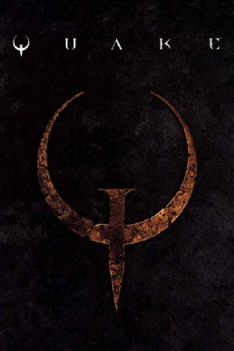

Shooter · 1996
Quake
True 3D, rocket jumps, and a mod scene that became an industry.

Cover: Wikipedia: Quake (video game)
Facts
- Released
- 1996-06-22
- Genre
- FPS
- Category
- Shooter
- Platforms
- Nintendo, PC, PlayStation, Retro home computer, Sega, Xbox
- Developers
- Id Software, Nightdive Studios
- Publishers
- Activision, Atari, Inc., Bethesda Softworks, ClickBoom, MacSoft Games, Macmillan Inc., Midway Games, Sega